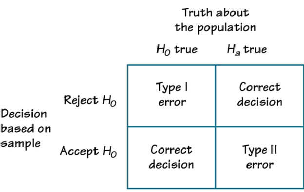

Type I and Type II Errors in Hypothesis Testing
- Feb 15 • 4 min read
- Key Terms: hypothesis testing
There are potential caveats to hypothesis testing with z-tests, t-tests or other similar tests.
Initially, we may apply a treatment to a sample and compare how a parameter of that sample differs from the same parameter from the popoulation without the treatment. However, it's possible to have sampling error. This is likely since we're unsure of the characteristics of the observations in the sample and they may not be representative of the whole population. We're unable to measure the exact sampling error since the ture population with the treatment is unkown at the beginning of a statistical hypothesis test.
Later, if we are able to capture data on the true population with the treatment, we can determine if a stastical error was made in our initial analysis.
Decision Errors
In the figure below, each quadrant has a meaning about correct or incorrect decisions in hypothesis testing.
Typically, in hypothesis testing, the "truth about the population" is unknown at first. For the example of Joe's personal training, the true population mean of people's weight would be if we could apply the treatment to a sufficiently large number of samples (perhaps hundreds of people) and calculate the mean of sample means with this treatment.
I provide explanations of each quadrant (image source) below.

The top left quadrant means the ground truth is that the null hypothesis is true, yet our research concluded to reject the null hypothesis (significant effect from the treatment). We made an incorrect statistical decision. This is considered a Type 1 error.
The top right quadrant means the ground truth is that the alternative hypothesis is true and our research concluded to reject the null hypothesis (significant effect from the treatment). This is an ideal situation.
The bottom left quadrant means the ground truth is that the null hypothesis is true and our research concluded that there's no evidence to reject the null hypothesis. This is an ideal situation.
The bottom right quadrant means the ground truth is that the alternative hypothesis is true, yet our research concluded that there's no evidence to reject the null hypothesis. We made an incorrect statistical decision. This is considered a Type 2 error.
How to Reduce Decision Errors
We minimize our chances of making the wrong decision when we have a large enough sample size, we randomize our sample and when we implmement proper experimental controls.
Example: Statistical Decision Errors in Rain Scenario
\(H_{o}\): It's not going to rain later today (so I don't need an umbrella).
\(H_{a}\): It's going to rain later today (so I should bring an umbrella).
Four possible scenarios:
- I think it's going to rain later so I bring an umbrella. However, later it doesn't rain. This is a Type 1 error.
- I think it's going to rain later so I bring an umbrella. I'm correct - it rained later and I was right in bringing an umbrella. (This is equivalent to the top right quadrant.)
- I think it's not going to rain later so I don't bring an umbrella. I'm correct - it doesn't rain later so I was correct in not bringing an umbrella. (This is equivalent to the bottom left quadrant.)
- I think it's not going to rain later so I don't bring an umbrella. However, later it rains. This is a Type 2 error.